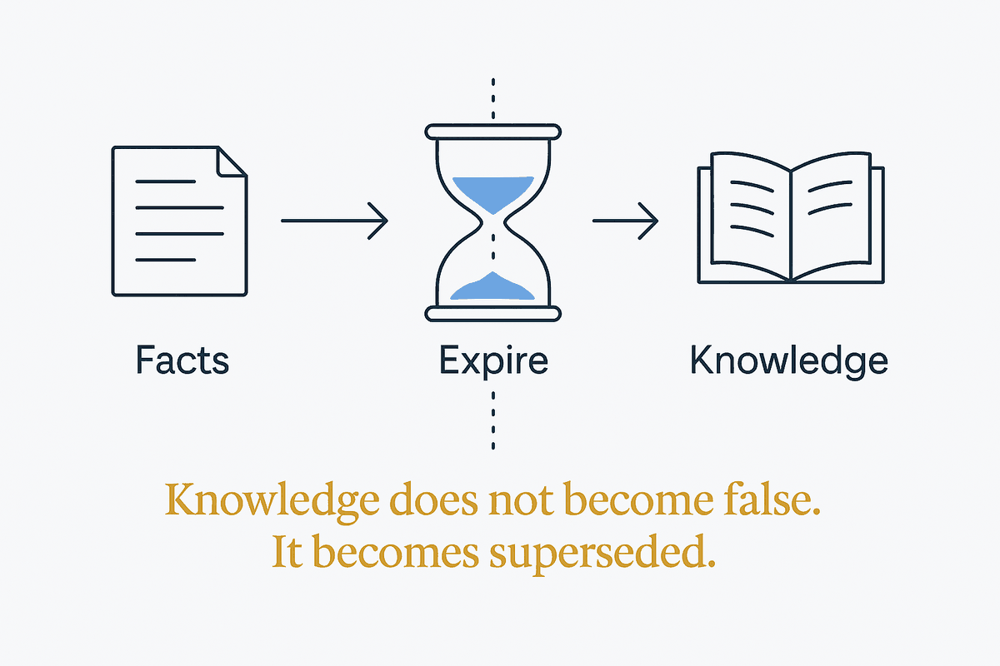

Knowledge doesn't become false, it becomes superseded. A store that only accumulates is a store that quietly gets less true.

Most knowledge bases are built as if facts were permanent. They are not. An employer, a price, a policy, a preference, an address — each was true, then something replaced it, and the old version did not become nonsense. It became superseded, which is a different and more useful state than either "true" or "deleted."
The distinction has teeth once a machine is reading. Delete the old fact and you lose the ability to answer historical questions and to explain how the current answer came to be. Keep it with equal standing and retrieval treats both as live, so the system confidently returns whichever happens to match the query better — which may well be the one that stopped being true two years ago. Neither behaviour is acceptable in a system anyone relies on.
What works is validity: every fact carries the interval over which it held, and supersession is recorded rather than performed by overwriting. Then "where did they work in June 2024?" has one correct answer, "what do we believe now?" has another, and both come from the same store without contradiction. This is not exotic — it is bi-temporal modelling, decades old in data warehousing, arriving in AI systems under new names because the same problem was rediscovered.
For a personal system the practical translation is small but strict: date what you capture, mark what replaces what, and treat expiry as a first-class event rather than a cleanup chore. A note that was accurate when written and is silently wrong now is worse than no note, because it carries the authority of your own handwriting. Pruning is not tidying; it is the maintenance that keeps a growing store trustworthy.